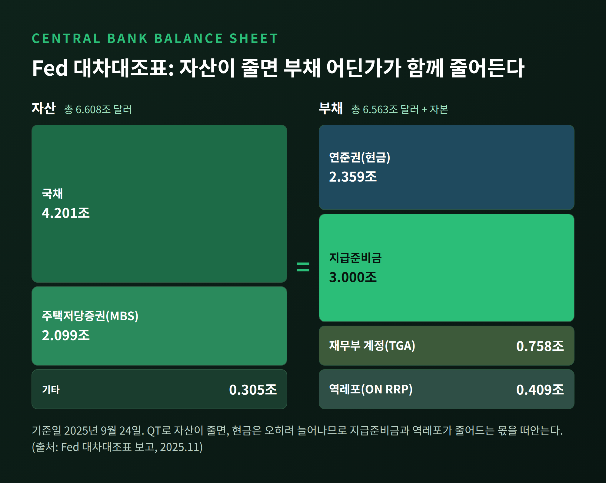
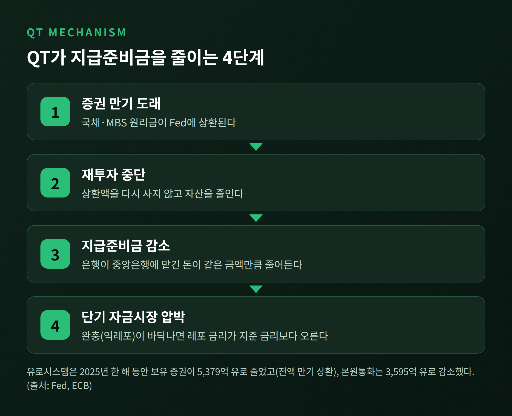
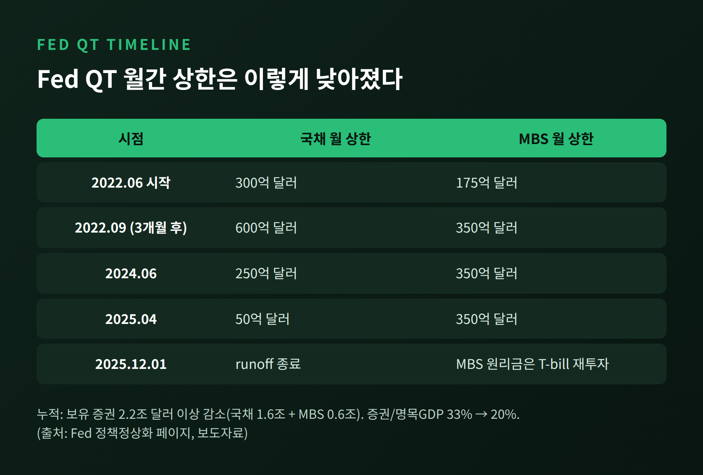
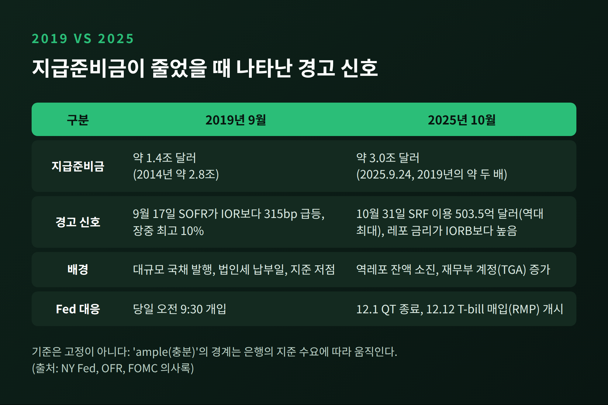
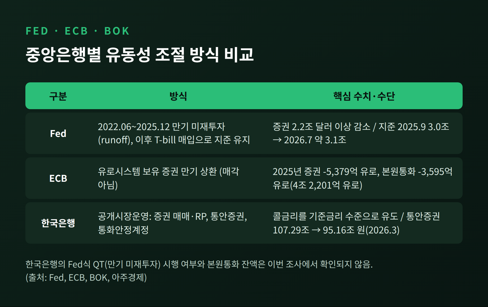

양적긴축 QT 원리, 본원통화가 줄면 시중 유동성은 어떻게 변할까

오늘은 양적긴축(QT)이 중앙은행 대차대조표와 본원통화를 어떻게 줄이는지, 그 결과가 시중 유동성에 어떤 모양으로 나타나는지 정리해 보려 합니다.
결론부터 말씀드리면 이렇습니다. 중앙은행이 채권을 덜 들고 있으면 은행이 중앙은행에 맡긴 돈, 즉 지급준비금이 줄어듭니다. 이 지준이 일정 선 아래로 내려가면 단기 자금시장 금리가 먼저 흔들립니다.
미국 연준(Fed)이 2022년 6월부터 2025년 12월 1일까지 이어간 QT가 가장 좋은 사례입니다.
■ 본원통화와 중앙은행 대차대조표, 먼저 구조부터
본원통화는 "중앙은행이 발행한 통화"이며, 통화량의 기초라는 뜻에서 붙은 이름입니다. 크게 두 갈래로 나뉩니다. 시중에서 돌아다니는 현금과, 은행이 중앙은행에 예치한 지급준비금입니다.
이 두 가지는 중앙은행 대차대조표의 부채 쪽에 기록됩니다. 자산 쪽에는 국채와 주택저당증권(MBS) 같은 보유 증권이 놓입니다.
2025년 9월 24일 Fed의 수치가 구조를 잘 보여줍니다. 총자산은 6조 6,080억 달러였고, 그중 증권이 6조 3,030억 달러였습니다. 부채 쪽에서는 지급준비금이 3조 달러, 연준권(현금)이 2조 3,590억 달러, 재무부 계정(TGA)이 7,580억 달러, 역레포(ON RRP)가 4,090억 달러였습니다.

핵심은 양쪽이 항상 같아야 한다는 점입니다. 자산이 줄면 부채 어딘가도 줄어야 합니다. 현금은 경제가 커질수록 오히려 늘어나니, 줄어드는 몫은 지급준비금이나 역레포 같은 항목이 떠안게 됩니다.
■ QT는 어떻게 본원통화를 줄이는가
QT에는 증권을 내다 파는 방식과 만기가 돌아와도 다시 사지 않는 방식이 있습니다. 2022년 Fed가 택한 것은 후자였습니다. 만기 도래분을 재투자하지 않고 그냥 흘려보내는 수동적 방식입니다.
과정은 이렇게 이어집니다. 국채 만기가 오면 재무부는 Fed에 원금을 갚습니다. 이 돈은 결국 은행 계좌에서 빠져나가 재무부 계정으로 옮겨집니다. Fed는 자산이 줄고, 은행의 지준도 같은 금액만큼 줄어듭니다. 본원통화가 그만큼 사라지는 셈입니다.

유럽에서도 같은 일이 있었습니다. 유로시스템의 총자산은 2025년 한 해 동안 6조 4,206억 유로에서 6조 2,818억 유로로 2.2% 줄었습니다. 통화정책용 보유 증권은 5,379억 유로 감소했는데, 전부 매각이 아니라 만기 상환이었습니다. 그 결과 본원통화는 3,595억 유로 줄어 4조 2,201억 유로가 되었습니다.
참고로 교과서는 본원통화가 예금창조를 거쳐 몇 배의 통화량으로 불어난다고 가르칩니다. 지급준비율 10%를 가정한 예시에서는 통화승수가 5배였습니다. 이 논리를 거꾸로 돌리면 본원통화 감소가 통화량을 크게 줄일 것 같지만, 현실은 그리 단순하지 않습니다. 영란은행 논문은 은행이 예금으로 대출을 만들어 내며, 지준이 부족해질 때 문제가 되는 것은 대출 창출의 비용이라고 설명합니다.
■ 예전엔 풍부했고, 지금은 빠듯해졌다
Fed의 QT는 2022년 6월 시작되었습니다. 처음에는 국채 월 300억 달러, MBS 월 175억 달러가 상한이었고, 석 달 뒤 각각 600억 달러와 350억 달러로 올랐습니다. 이후 속도를 늦췄습니다. 2024년 6월에는 국채 상한이 250억 달러로, 2025년 4월에는 50억 달러로 내려갔습니다.

누적 규모는 보유 증권 2조 2,000억 달러 이상입니다. 국채 1조 6,000억 달러와 MBS 6,000억 달러가 줄었습니다. 증권 보유액이 명목 GDP에서 차지하는 비중은 33%에서 20%로 내려갔습니다.
그런데 초반 3년은 시중이 조용했습니다. 이유는 완충 장치에 있었습니다. 뉴욕 연준 연구에 따르면 지준은 명목 GDP의 약 13%에서 출발해 2024년 5월에도 약 12%를 유지했습니다. 대차대조표 축소분을 지준이 아니라 역레포(ON RRP) 잔액 감소가 대부분 흡수했기 때문입니다. 돈이 갈 곳을 찾아 역레포에 쌓여 있다가, 그 잔고가 줄어든 만큼 자금이 빠져나간 것입니다.
그 완충이 바닥나자 분위기가 달라졌습니다. 2025년 10월 FOMC 의사록에는 ON RRP 이용이 "de minimis", 즉 미미한 수준으로 떨어졌고 레포 금리가 지준 금리(IORB)보다 "notably higher" 움직였다고 적혀 있습니다. 시장 담당자는 "runoff를 계속하면 머니마켓 변동성이 더 커질 것"이라고 경고했습니다. 위원회는 12월 1일 종료에 거의 만장일치로 동의했습니다.
■ 2019년의 교훈과 2025년의 경고등
QT가 자금시장을 흔든 일은 처음이 아닙니다. 2019년 9월 17일, 지준이 2014년 약 2조 8,000억 달러에서 약 1조 4,000억 달러로 줄어든 상황에서 SOFR가 지준 금리보다 315bp 치솟았습니다. 뉴욕 연준 보고서는 대형 레포 은행 10곳의 지준이 대략 5,800억 달러 아래일 때 SOFR가 지준 금리를 크게 웃돌곤 했다고 분석합니다. 금융조사국(OFR)은 대규모 국채 발행과 법인세 납부일이 겹친 탓이라고 짚었습니다. 장중에는 레포 금리가 최고 10%까지 올랐습니다.
2025년에는 지준이 3조 달러 안팎으로 훨씬 넉넉했는데도 경고음이 울렸습니다. 10월 31일 월말에 은행들이 상시 레포 창구(SRF)에서 503억 5,000만 달러를 빌려 갔습니다. 역대 최대였습니다. 한 애널리스트는 "SRF가 설계대로 작동한 첫 사례"라고 평했습니다.

두 사례에서 얻는 교훈은 분명합니다. "충분한 지준"의 기준은 고정된 숫자가 아닙니다. 뉴욕 연준은 ample의 경계가 은행의 지준 수요에 따라 변한다고 설명합니다. 재무부 계정이 불어나는 것도 변수입니다. 2025년 3월부터 9월까지 총자산은 1,320억 달러 줄었는데, 지준은 4,510억 달러 줄었습니다. TGA가 4,420억 달러 늘면서 지준을 추가로 빨아들였기 때문입니다.
■ QT가 끝난 뒤, 그리고 한국은 어떨까
Fed는 QT를 끝내고도 자산을 다시 사기 시작했습니다. 2025년 12월 12일부터 단기 국채(T-bill)를 사들이는 지준관리매입(RMP)입니다. 첫 달 규모는 약 400억 달러였습니다. 파월 의장은 이를 통화정책과는 "completely separate", 즉 완전히 별개라고 선을 그었습니다. 금리를 행정금리로 통제하려면 지준이 충분해야 하기 때문이라는 설명입니다. 같은 자리에서 그는 장기적으로는 월 200억~250억 달러 수준이면 된다고 말했습니다.
2026년 1월 초 이후 7월까지 Fed가 사들인 T-bill은 약 2,500억 달러입니다. RMP가 약 1,600억 달러, MBS 재투자가 약 900억 달러입니다. 지준은 7월 1일 약 3조 1,000억 달러였습니다. 9월 23일 주간에는 2조 9,302억 달러로 내려왔는데, 주된 이유는 재무부 예치금이 1,136억 달러 늘어난 것이었습니다.

한국은 구조가 다릅니다. 한국은행은 공개시장운영으로 유동성을 조절하며, 채권을 사면 지준이 공급되고 팔면 환수됩니다. 수단은 증권 매매와 RP, 통화안정증권(통안증권), 통화안정계정입니다. 목표는 콜금리를 기준금리 수준에 맞추는 것입니다. 통안증권 잔액은 2025년 말 107조 2,900억 원에서 2026년 3월 95조 1,600억 원으로 줄어 2003년 이후 처음 100조 원 아래로 내려갔고, 한은은 8월 발행 방식을 손질했습니다.
다만 한국은행이 Fed처럼 만기 미재투자 방식의 QT를 공식 시행했는지는 이번에 확인하지 못했습니다. 한국의 본원통화 잔액 자료도 마찬가지입니다. 이 부분은 단정하지 않겠습니다.
한계도 분명히 해 둘 필요가 있습니다. 국제결제은행(BIS) 논문은 미국에서 QE와 QT가 회사채 시장을 통해 전달되며, 평균적인 기업의 투자와 고용에는 통계적으로 유의한 영향이 없었다고 봅니다. 영란은행 모형은 지준이 부족한 은행에서 금융 위축이 커질 수 있다고 보지만, 모형 결과일 뿐 실증은 아닙니다. 실물 경제에 미치는 영향은 조건에 따라 달라진다는 뜻입니다.
정리하면 이렇습니다. QT는 자산을 줄여 본원통화를 줄이고, 그 부담은 역레포 같은 완충 장치가 소진된 뒤에야 지준과 단기 금리에 나타납니다.
"얼마나 줄였느냐보다, 완충이 얼마나 남았느냐가 관건입니다."
2019년에는 지준이 1조 4,000억 달러까지 줄어서야 경고가 울렸고, 2025년에는 3조 달러 수준에서 먼저 울렸습니다. 기준선은 언제나 움직이는 것이라고 생각합니다. 다음에 중앙은행이 자산을 줄인다는 소식을 들으신다면, 총자산 숫자보다 지준과 역레포 잔액, 재무부 계정 세 가지를 함께 살펴보시길 권합니다.